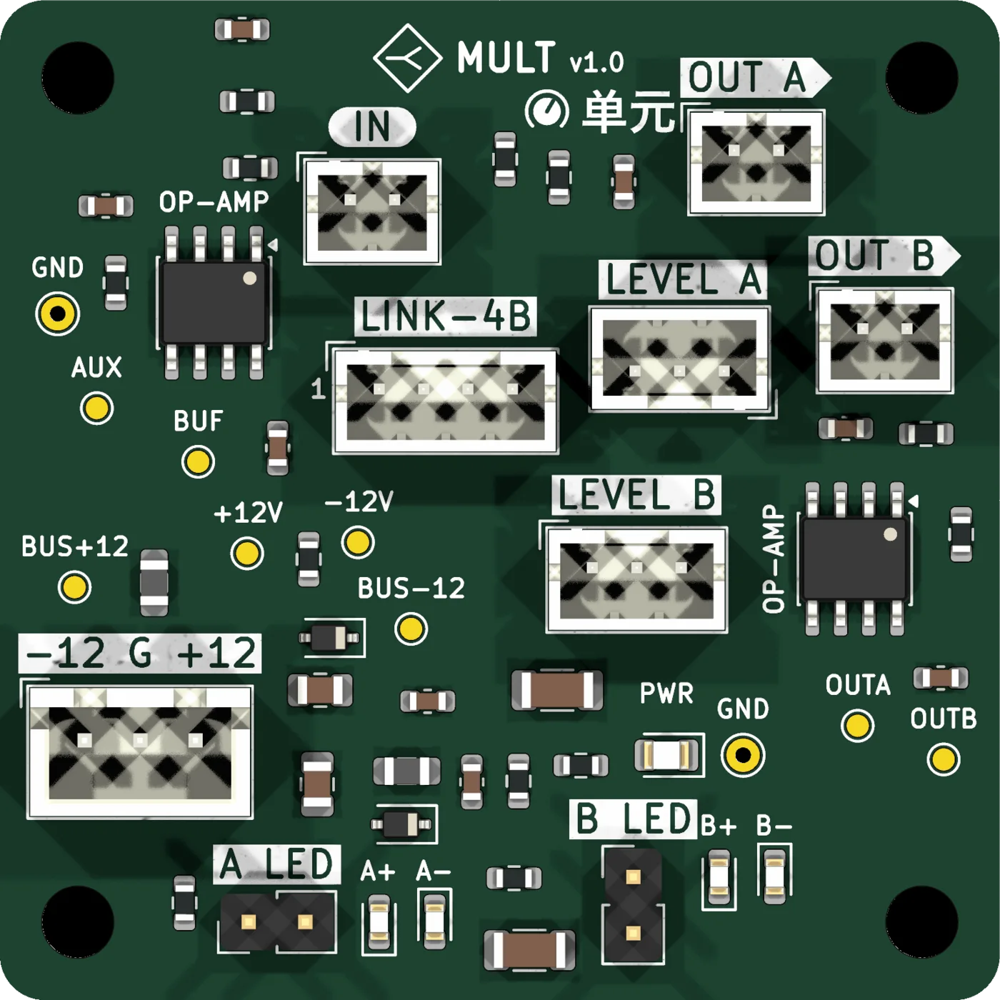
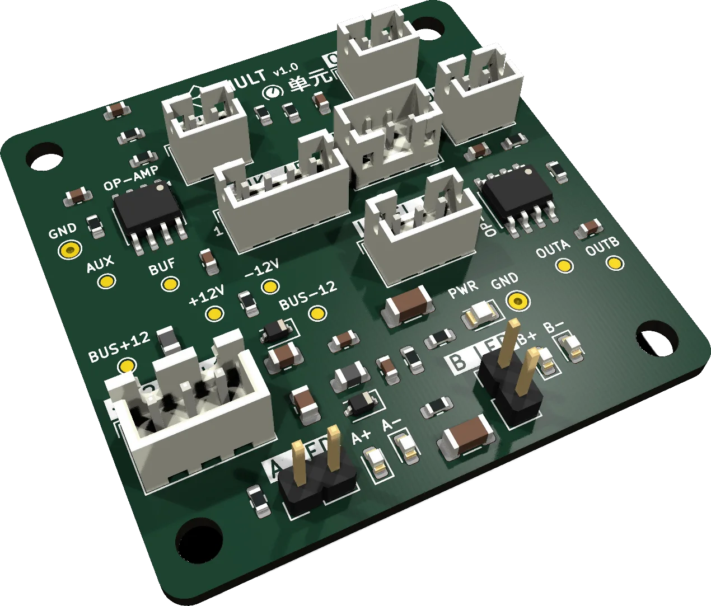
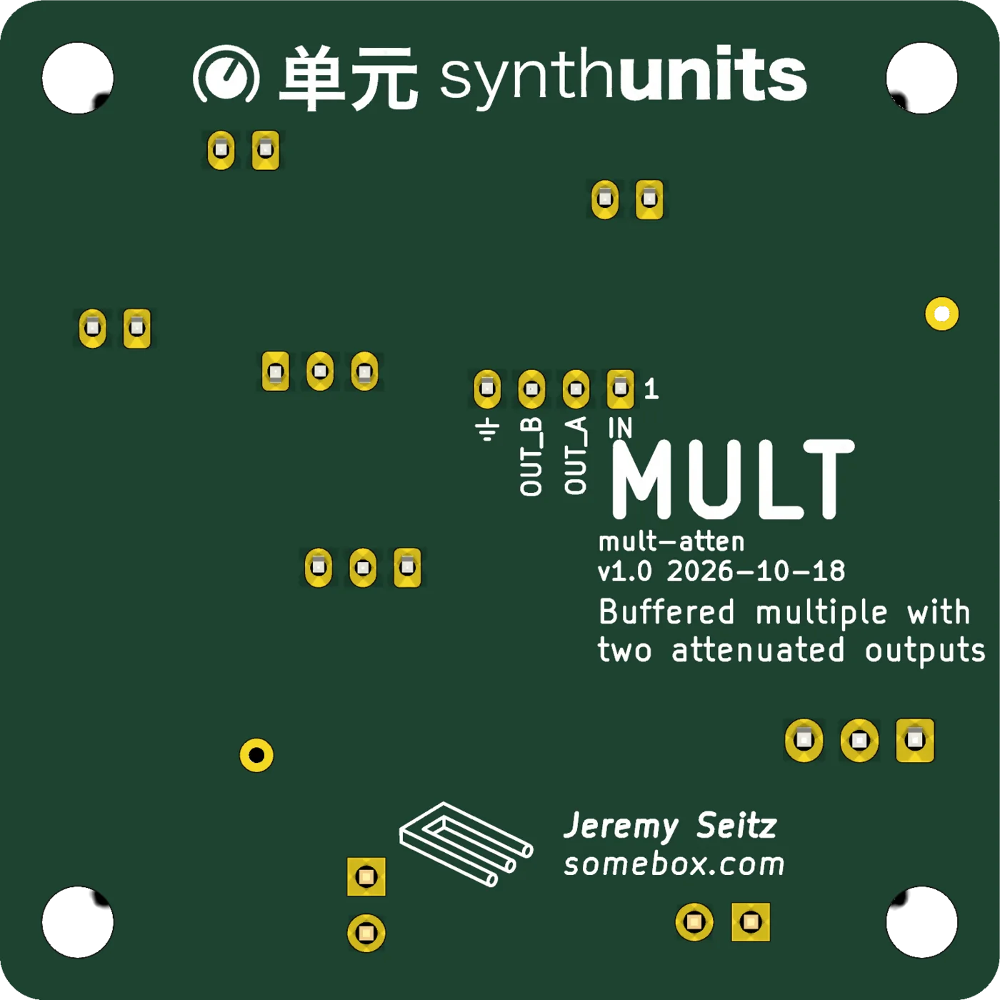

Buffered multiple, two attenuated outputs
One input buffered to two outputs, each with its own level, for audio or CV.
A buffered multiple with an attenuator on each output, on a 45 × 45 mm board. One input, two outputs, a level pot for each: two inverting stages buffer the input at unity, each LEVEL pot hangs from that buffered copy, and a follower drives each output. Full level is unity, fully down is 0 V.
It is DC-coupled, so it splits CVs as well as audio. A typical use: one envelope to both the VCA and the filter, each with its own depth.
- Status
- In design: parts placed, not routed yet
- Board
- 45 × 45 mm, 2 layers
- Progress
- follow its tracking issue



Block diagram
Drawn by the site's generator from the board's own data: its blocks, its connectors and the links between them. The pots and switches are listed in the block they set.
What it does
- Input: 100 kΩ, DC-coupled. The input stage's inputs sit at 0 V, so ±10 V can't push the op-amp out of its range.
- Outputs: OUT A and OUT B through 1 kΩ, each from 0 to unity on its Alpha 9 mm B10K LEVEL pot.
- Law: the followers don't load the pots, so the level follows the pot's law exactly: linear with B10K, audio-style with A10K.
- Not simulated: textbook stages.
- Power: under 10 mA on each rail, estimated (two dual op-amps and the pots).
- Board: 45 × 45 mm, 2 layers, four M3 holes.
Connections
| Connector | Wire to | Housing | Pins |
|---|---|---|---|
| IN | a jack (Thonkiconn) | JST PH, 2 pins, top entry | 1 tip, 2 GND |
| LEVEL A (B10K) | a pot (Alpha 9 mm B10K) | JST PH, 3 pins, top entry | 1 CCW, 2 wiper, 3 CW |
| LEVEL B (B10K) | a pot (Alpha 9 mm B10K) | JST PH, 3 pins, top entry | 1 CCW, 2 wiper, 3 CW |
| OUT A | a jack (Thonkiconn) | JST PH, 2 pins, top entry | 1 tip, 2 GND |
| OUT B | a jack (Thonkiconn) | JST PH, 2 pins, top entry | 1 tip, 2 GND |
| POWER (1 -12V, 2 GND, 3 +12V) | a the power board output (straight-through JST XH lead) | JST XH, 3 pins, top entry | 1 −12 V, 2 GND, 3 +12 V |
| LINK | a lead to another module, or open | JST PH, 4 pins, top entry | 1 IN_MULT, 2 OUT_A, 3 OUT_B, 4 GND |
Every panel control has its own connector with a fixed pinout, so any lead of the right size fits any module. Pin 1 is the square pad.
LEDs
On the board: A+ (yellow), A- (red), B+ (yellow), PWR (green). Pads for a panel LED: A LED, B LED.
Wiring and setup
- Power: a 3-pin JST XH lead (1 −12 V, 2 GND, 3 +12 V) from one of the power hub's outputs, with a ferrite and a series Schottky on each rail. Check each lead with a meter first.
- Panel: 3 jacks (IN, OUT A, OUT B) and 2 Alpha 9 mm B10K pots (LEVEL A, LEVEL B), each on its own top-entry JST PH connector: jacks 2-pin (1 tip, 2 GND), pots 3-pin (1 CCW, 2 wiper, 3 CW).
- A LED and B LED pads: each output's level in both polarities, through its own resistor. Wire a two-lead bicolour LED, or two LEDs back to back.
- LINK-4B: 1 IN (sums with the jack), 2 OUT A, 3 OUT B (before their 1 kΩ), 4 GND.
- For a third output at unity, run a 1 kΩ from the BUF test pad to another jack connector.
- No trimmers: nothing to calibrate.
Limits and open questions
- A placement mockup: the parts are placed, the board isn't routed. Not built.
- An input near −10 V takes the followers close to the op-amp's input range, where some makers' versions of the part reverse phase.
- No front panel drawn for it yet.
Development notes
- Two inverting stages and two followers, as in Doepfer's A-180 buffered multiple and countless attenuators. Drawn from scratch.
- The pots hang from an op-amp output, so 10k is fine there and quieter than 100k.
- Next: route it once the first boards are built and proven.
Schematic
The schematic as drawn, with each chip named by its function rather than its part number. The design isn't open source yet, so there are no files to download.


Would you use a MULT? A thumbs-up on its tracking issue is how I count interest, and you can subscribe there to follow its bring-up. Questions and ideas go to the discussions.